Position scales for continuous data (x & y)
scale_x_continuous and scale_y_continuous are the default
scales for continuous x and y aesthetics. There are three variants
that set the trans argument for commonly used transformations:
scale_*_log10, scale_*_sqrt and scale_*_reverse.
scale_x_continuous(name = waiver(), breaks = waiver(), minor_breaks = waiver(), labels = waiver(), limits = NULL, expand = waiver(), oob = censor, na.value = NA_real_, trans = "identity", position = "bottom", sec.axis = waiver()) scale_y_continuous(name = waiver(), breaks = waiver(), minor_breaks = waiver(), labels = waiver(), limits = NULL, expand = waiver(), oob = censor, na.value = NA_real_, trans = "identity", position = "left", sec.axis = waiver()) scale_x_log10(...) scale_y_log10(...) scale_x_reverse(...) scale_y_reverse(...) scale_x_sqrt(...) scale_y_sqrt(...)
Arguments
- name
The name of the scale. Used as axis or legend title. If
NULL, the default, the name of the scale is taken from the first mapping used for that aesthetic.- breaks
One of:
-
NULLfor no breaks -
waiver()for the default breaks computed by the transformation object - A numeric vector of positions
- A function that takes the limits as input and returns breaks as output
- minor_breaks
One of:
-
NULLfor no minor breaks -
waiver()for the default breaks (one minor break between each major break) - A numeric vector of positions
- A function that given the limits returns a vector of minor breaks.
- labels
One of:
-
NULLfor no labels -
waiver()for the default labels computed by the transformation object - A character vector giving labels (must be same length as
breaks) - A function that takes the breaks as input and returns labels as output
- limits
A numeric vector of length two providing limits of the scale. Use
NAto refer to the existing minimum or maximum.- expand
A numeric vector of length two giving multiplicative and additive expansion constants. These constants ensure that the data is placed some distance away from the axes. The defaults are
c(0.05, 0)for continuous variables, andc(0, 0.6)for discrete variables.- oob
Function that handles limits outside of the scale limits (out of bounds). The default replaces out of bounds values with NA.
- na.value
Missing values will be replaced with this value.
- trans
Either the name of a transformation object, or the object itself. Built-in transformations include "asn", "atanh", "boxcox", "exp", "identity", "log", "log10", "log1p", "log2", "logit", "probability", "probit", "reciprocal", "reverse" and "sqrt".
A transformation object bundles together a transform, it's inverse, and methods for generating breaks and labels. Transformation objects are defined in the scales package, and are called
name_trans, e.g.boxcox_trans. You can create your own transformation withtrans_new.- position
The position of the axis. "left" or "right" for vertical scales, "top" or "bottom" for horizontal scales
- sec.axis
specifify a secondary axis
- ...
Other arguments passed on to
scale_(x|y)_continuous
Details
For simple manipulation of labels and limits, you may wish to use
labs() and lims() instead.
See also
sec_axis for how to specify secondary axes
Other position scales: scale_x_date,
scale_x_discrete
Examples
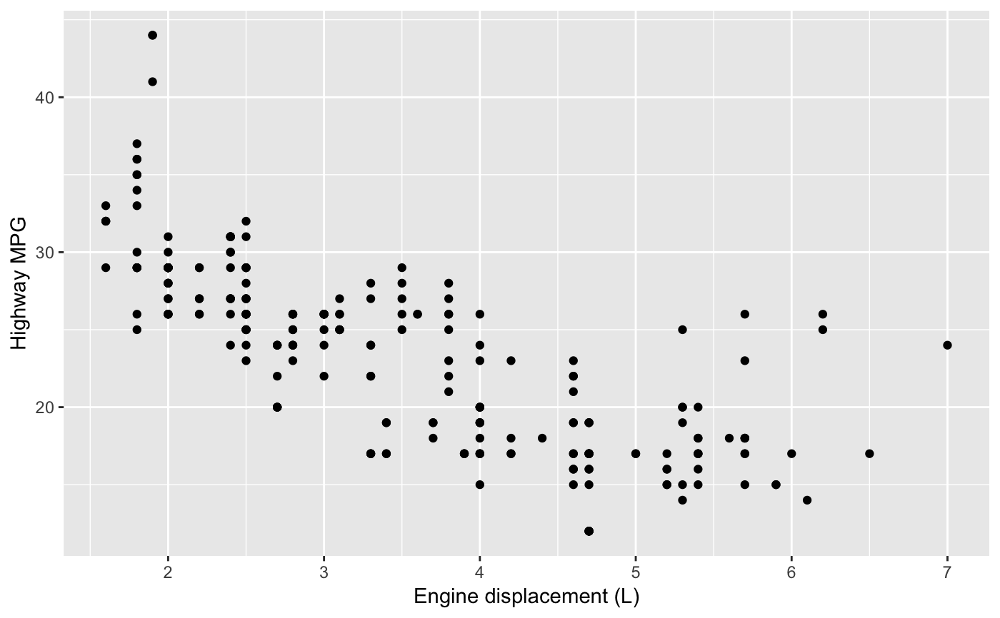# Manipulating the default position scales lets you: # * change the axis labels p1 + scale_x_continuous("Engine displacement (L)") + scale_y_continuous("Highway MPG")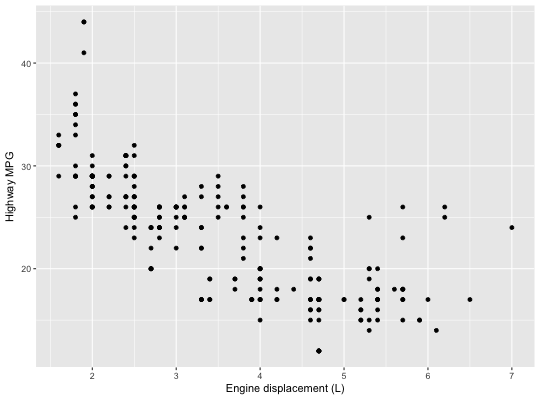# You can also use the short-cut labs(). # Use NULL to suppress axis labels p1 + labs(x = NULL, y = NULL)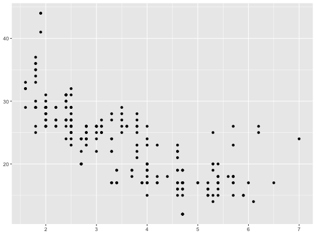# * modify the axis limits p1 + scale_x_continuous(limits = c(2, 6))#> Warning: Removed 27 rows containing missing values (geom_point).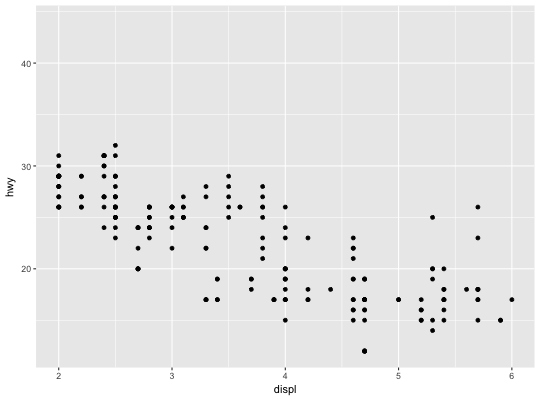p1 + scale_x_continuous(limits = c(0, 10))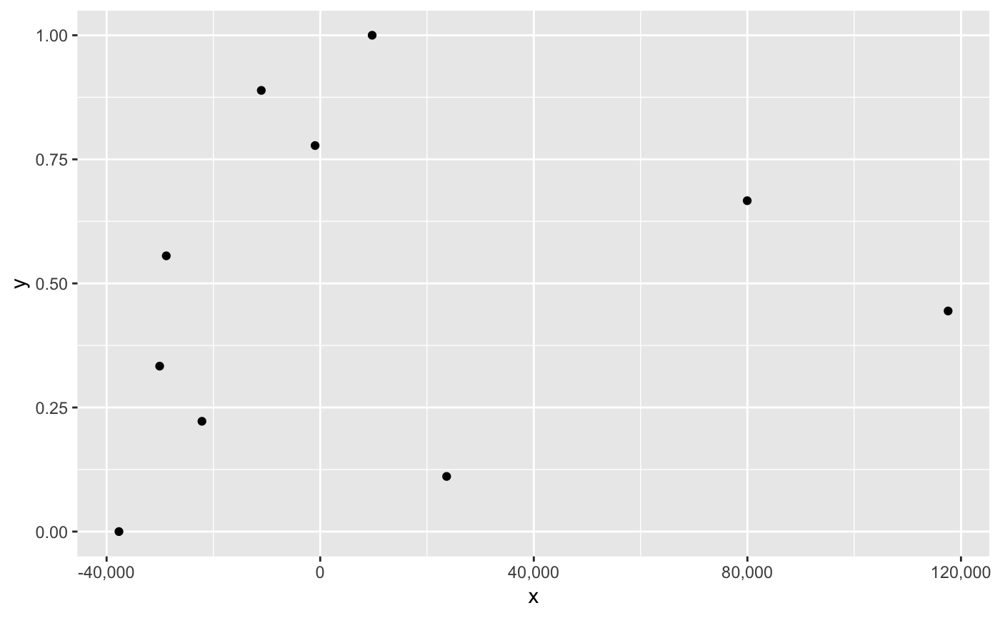#> Warning: Removed 27 rows containing missing values (geom_point).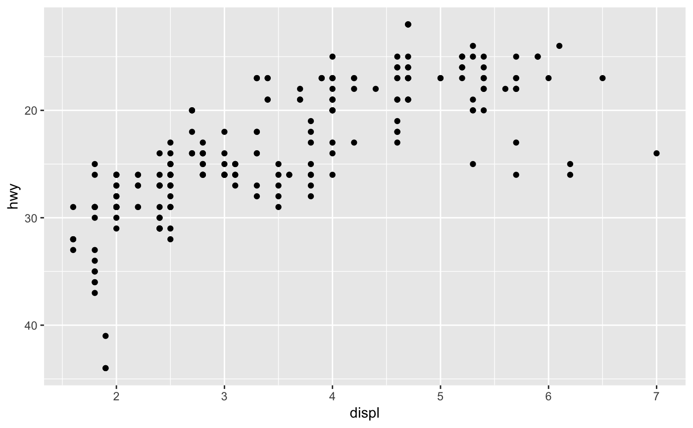# * choose where the ticks appear p1 + scale_x_continuous(breaks = c(2, 4, 6))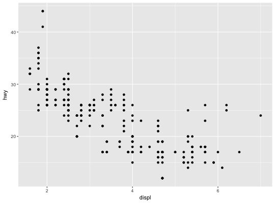# * add what labels they have p1 + scale_x_continuous( breaks = c(2, 4, 6), label = c("two", "four", "six") )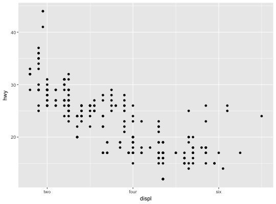# Typically you'll pass a function to the `labels` argument. # Some common formats are built into the scales package: df <- data.frame( x = rnorm(10) * 100000, y = seq(0, 1, length.out = 10) ) p2 <- ggplot(df, aes(x, y)) + geom_point() p2 + scale_y_continuous(labels = scales::percent)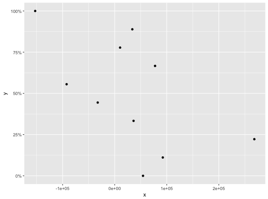p2 + scale_y_continuous(labels = scales::dollar)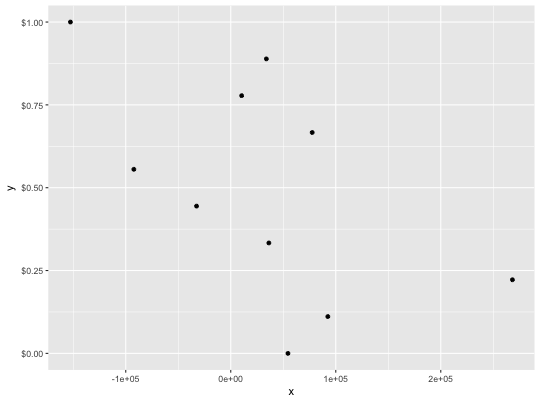p2 + scale_x_continuous(labels = scales::comma)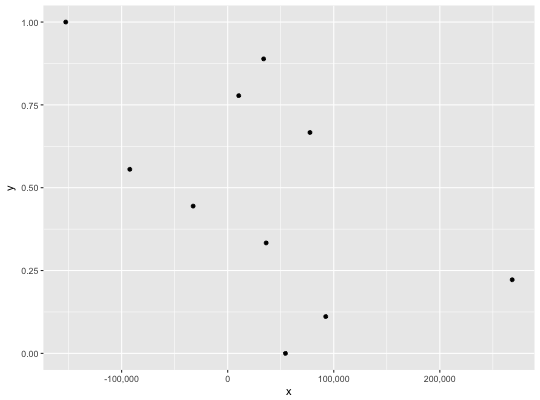# You can also override the default linear mapping by using a # transformation. There are three shortcuts: p1 + scale_y_log10()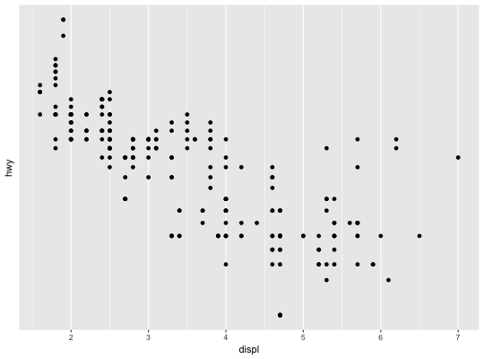p1 + scale_y_sqrt()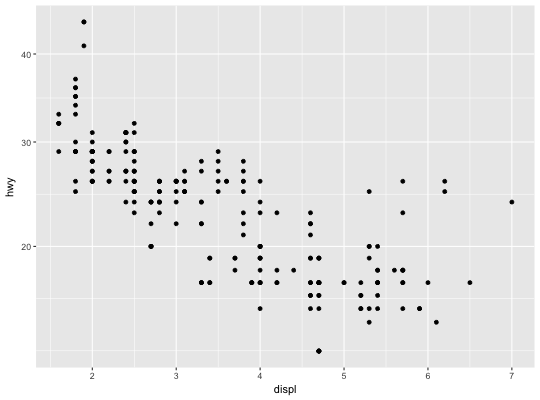p1 + scale_y_reverse()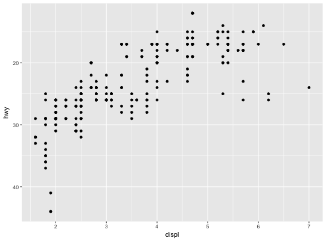# Or you can supply a transformation in the `trans` argument: p1 + scale_y_continuous(trans = scales::reciprocal_trans())# You can also create your own. See ?scales::trans_new